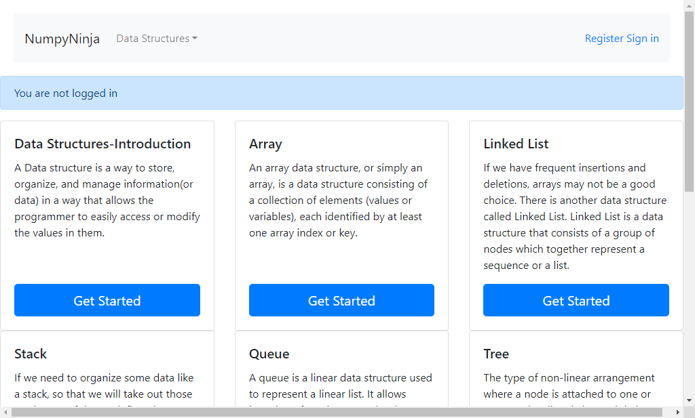
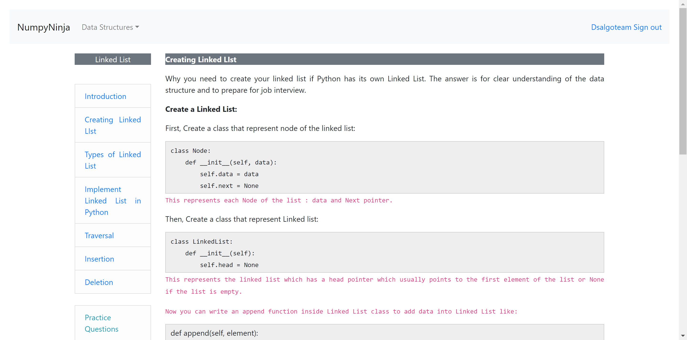
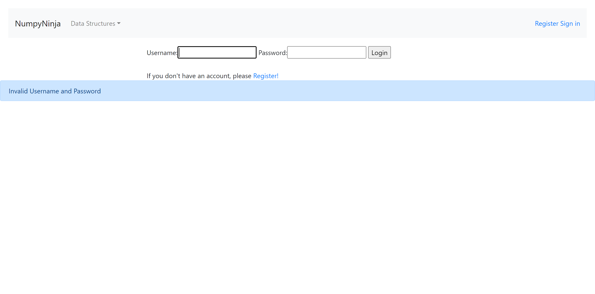

Started
Aug 23, 2024 11:56:13 AM
Ended
Aug 23, 2024 12:04:02 PM
Features Passed
0
Features Failed
2
Features
Scenarios
Steps
Timeline
System/Environment
| Name | Value |
|---|---|
| AppName | dsAlgoProject |
| user | qaSquad |
| build | 1.1 |
| os | Windows |
-
Linked List Navigation and Interaction
11:56:16 AM / 00:00:26:721 Fail
Linked List Navigation and Interaction
08.23.2024 11:56:16 AM 08.23.2024 11:56:42 AM 00:00:26:721 · #test-id=1FailUser navigates to tryEditor from Introductionpagecom.dsAlgoProject.Hooks.dsAlgoHooks.setUp(io.cucumber.java.Scenario)Given the user navigates to the login pageStep skippedWhen the user enters a valid username and passwordStep skippedThen clicks the login buttonStep skippedGiven the user is on "Introductionpage"Step skippedWhen the user selects "Try Here" buttonStep skippedThen the user should land on the "Assessment" pageStep skippedFailUser navigates to Implement Linked List in Python from linkedlistpagecom.dsAlgoProject.Hooks.dsAlgoHooks.setUp(io.cucumber.java.Scenario)Given the user navigates to the login pageStep skippedWhen the user enters a valid username and passwordStep skippedThen clicks the login buttonStep skippedGiven the user is on "linkedlistpage"Step skippedWhen the user selects "Implement Linked List in Python" buttonStep skippedThen the user should land on the "Implement Linked List in Python" pageStep skippedFailUser navigates to Introduction from linkedlistpagecom.dsAlgoProject.Hooks.dsAlgoHooks.setUp(io.cucumber.java.Scenario)Given the user navigates to the login pageStep skippedWhen the user enters a valid username and passwordStep skippedThen clicks the login buttonStep skippedGiven the user is on "linkedlistpage"Step skippedWhen the user selects "Introduction" buttonStep skippedThen the user should land on the "Introduction" pageStep skippedFailUser navigates to tryEditor from ImplementLinkedListinPythonpagecom.dsAlgoProject.Hooks.dsAlgoHooks.setUp(io.cucumber.java.Scenario)Given the user navigates to the login pageStep skippedWhen the user enters a valid username and passwordStep skippedThen clicks the login buttonStep skippedGiven the user is on "ImplementLinkedListinPythonpage"Step skippedWhen the user selects "Try Here" buttonStep skippedThen the user should land on the "Assessment" pageStep skippedFailUser navigates to Traversal from linkedlistpagecom.dsAlgoProject.Hooks.dsAlgoHooks.setUp(io.cucumber.java.Scenario)Given the user navigates to the login pageStep skippedWhen the user enters a valid username and passwordStep skippedThen clicks the login buttonStep skippedGiven the user is on "linkedlistpage"Step skippedWhen the user selects "Traversal" buttonStep skippedThen the user should land on the "Traversal" pageStep skippedFailUser navigates to tryEditor from Creating Linked LIst pagecom.dsAlgoProject.Hooks.dsAlgoHooks.setUp(io.cucumber.java.Scenario)Given the user navigates to the login pageStep skippedWhen the user enters a valid username and passwordStep skippedThen clicks the login buttonStep skippedGiven the user is on "CreatingLinkedLIstpage"Step skippedWhen the user selects "Try Here" buttonStep skippedThen the user should land on the "Assessment" pageStep skippedFailUser navigates to tryEditor from Traversalpagecom.dsAlgoProject.Hooks.dsAlgoHooks.setUp(io.cucumber.java.Scenario)Given the user navigates to the login pageStep skippedWhen the user enters a valid username and passwordStep skippedThen clicks the login buttonStep skippedGiven the user is on "Traversalpage"Step skippedWhen the user selects "Try Here" buttonStep skippedThen the user should land on the "Assessment" pageStep skippedFailUser navigates to tryEditor from Insertionpagecom.dsAlgoProject.Hooks.dsAlgoHooks.setUp(io.cucumber.java.Scenario)Given the user navigates to the login pageStep skippedWhen the user enters a valid username and passwordStep skippedThen clicks the login buttonStep skippedGiven the user is on "Insertionpage"Step skippedWhen the user selects "Try Here" buttonStep skippedThen the user should land on the "Assessment" pageStep skippedFailUser navigates to Practice Questions from linkedlistpagecom.dsAlgoProject.Hooks.dsAlgoHooks.setUp(io.cucumber.java.Scenario)Given the user navigates to the login pageStep skippedWhen the user enters a valid username and passwordStep skippedThen clicks the login buttonStep skippedGiven the user is on "Deletionpage"Step skippedWhen the user selects "Practice Questions" buttonStep skippedThen the user should land on the "Practice Questions" pageStep skippedFailUser navigates to tryEditor from Deletionpagecom.dsAlgoProject.Hooks.dsAlgoHooks.setUp(io.cucumber.java.Scenario)Given the user navigates to the login pageStep skippedWhen the user enters a valid username and passwordStep skippedThen clicks the login buttonStep skippedGiven the user is on "Deletionpage"Step skippedWhen the user selects "Try Here" buttonStep skippedThen the user should land on the "Assessment" pageStep skippedFailUser navigates to Insertion from linkedlistpagecom.dsAlgoProject.Hooks.dsAlgoHooks.setUp(io.cucumber.java.Scenario)Given the user navigates to the login pageStep skippedWhen the user enters a valid username and passwordStep skippedThen clicks the login buttonStep skippedGiven the user is on "linkedlistpage"Step skippedWhen the user selects "Insertion" buttonStep skippedThen the user should land on the "Insertion" pageStep skippedFailUser navigates to Creating Linked List page from linkedlistpagecom.dsAlgoProject.Hooks.dsAlgoHooks.setUp(io.cucumber.java.Scenario)Given the user navigates to the login pageStep skippedWhen the user enters a valid username and passwordStep skippedThen clicks the login buttonStep skippedGiven the user is on "linkedlistpage"Step skippedWhen the user selects "Creating Linked LIst" buttonStep skippedThen the user should land on the "Creating Linked LIst" pageStep skippedFailUser navigates to tryEditor from Types of Linked List pagecom.dsAlgoProject.Hooks.dsAlgoHooks.setUp(io.cucumber.java.Scenario)Given the user navigates to the login pageStep skippedWhen the user enters a valid username and passwordStep skippedThen clicks the login buttonStep skippedGiven the user is on "TypesofLinkedListpage"Step skippedWhen the user selects "Try Here" buttonStep skippedThen the user should land on the "Assessment" pageStep skippedFailUser navigates to Deletion from linkedlistpagecom.dsAlgoProject.Hooks.dsAlgoHooks.setUp(io.cucumber.java.Scenario)Given the user navigates to the login pageStep skippedWhen the user enters a valid username and passwordStep skippedThen clicks the login buttonStep skippedGiven the user is on "linkedlistpage"Step skippedWhen the user selects "Deletion" buttonStep skippedThen the user should land on the "Deletion" pageStep skippedFailUser navigates to Types of Linked List from linkedlistpagecom.dsAlgoProject.Hooks.dsAlgoHooks.setUp(io.cucumber.java.Scenario)Given the user navigates to the login pageStep skippedWhen the user enters a valid username and passwordStep skippedThen clicks the login buttonStep skippedGiven the user is on "linkedlistpage"Step skippedWhen the user selects "Types of Linked List" buttonStep skippedThen the user should land on the "Types of Linked List" pageStep skipped -
Linked List Navigation and Interaction
11:56:47 AM / 00:07:14:574 Fail
Linked List Navigation and Interaction
08.23.2024 11:56:47 AM 08.23.2024 12:04:02 PM 00:07:14:574 · #test-id=242PassUser navigates to Types of Linked List from linkedlistpageGiven the user navigates to the login pageWhen the user enters a valid username and passwordThen clicks the login buttonGiven the user is on "linkedlistpage"When the user selects "Types of Linked List" buttonThen the user should land on the "Types of Linked List" pagePassUser navigates to tryEditor from ImplementLinkedListinPythonpageGiven the user navigates to the login pageWhen the user enters a valid username and passwordThen clicks the login buttonGiven the user is on "ImplementLinkedListinPythonpage"When the user selects "Try Here" buttonThen the user should land on the "Assessment" pagePassUser navigates to tryEditor from IntroductionpageGiven the user navigates to the login pageWhen the user enters a valid username and passwordThen clicks the login buttonGiven the user is on "Introductionpage"When the user selects "Try Here" buttonThen the user should land on the "Assessment" pagePassUser navigates to tryEditor from TraversalpageGiven the user navigates to the login pageWhen the user enters a valid username and passwordThen clicks the login buttonGiven the user is on "Traversalpage"When the user selects "Try Here" buttonThen the user should land on the "Assessment" pagePassUser navigates to Creating Linked List page from linkedlistpageGiven the user navigates to the login pageWhen the user enters a valid username and passwordThen clicks the login buttonGiven the user is on "linkedlistpage"When the user selects "Creating Linked LIst" buttonThen the user should land on the "Creating Linked LIst" pagePassUser navigates to Introduction from linkedlistpageGiven the user navigates to the login pageWhen the user enters a valid username and passwordThen clicks the login buttonGiven the user is on "linkedlistpage"When the user selects "Introduction" buttonThen the user should land on the "Introduction" pagePassUser navigates to tryEditor from Creating Linked LIst pageGiven the user navigates to the login pageWhen the user enters a valid username and passwordThen clicks the login buttonGiven the user is on "CreatingLinkedLIstpage"When the user selects "Try Here" buttonThen the user should land on the "Assessment" pagePassUser navigates to Traversal from linkedlistpageGiven the user navigates to the login pageWhen the user enters a valid username and passwordThen clicks the login buttonGiven the user is on "linkedlistpage"When the user selects "Traversal" buttonThen the user should land on the "Traversal" pagePassUser navigates to Practice Questions from linkedlistpageGiven the user navigates to the login pageWhen the user enters a valid username and passwordThen clicks the login buttonGiven the user is on "Deletionpage"When the user selects "Practice Questions" buttonThen the user should land on the "Practice Questions" pageFailUser navigates to Implement Linked List in Python from linkedlistpageGiven the user navigates to the login pageWhen the user enters a valid username and passwordThen clicks the login buttonGiven the user is on "linkedlistpage"When the user selects "Implement Linked List in Python" buttoncom.dsAlgoProject.Hooks.dsAlgoHooks.afterStep(io.cucumber.java.Scenario)User_navigates_to_Implement_Linked_List_in_Python_from_linkedlistpageThen the user should land on the "Implement Linked List in Python" pageStep skippedFailUser navigates to tryEditor from InsertionpageGiven the user navigates to the login pageWhen the user enters a valid username and passwordcom.dsAlgoProject.Hooks.dsAlgoHooks.afterStep(io.cucumber.java.Scenario)User_navigates_to_tryEditor_from_InsertionpageThen clicks the login buttonStep skippedGiven the user is on "Insertionpage"Step skippedWhen the user selects "Try Here" buttonStep skippedThen the user should land on the "Assessment" pageStep skippedFailUser navigates to Insertion from linkedlistpageGiven the user navigates to the login pageWhen the user enters a valid username and passwordcom.dsAlgoProject.Hooks.dsAlgoHooks.afterStep(io.cucumber.java.Scenario)User_navigates_to_Insertion_from_linkedlistpageThen clicks the login buttonStep skippedGiven the user is on "linkedlistpage"Step skippedWhen the user selects "Insertion" buttonStep skippedThen the user should land on the "Insertion" pageStep skippedPassUser navigates to tryEditor from Types of Linked List pageGiven the user navigates to the login pageWhen the user enters a valid username and passwordThen clicks the login buttonGiven the user is on "TypesofLinkedListpage"When the user selects "Try Here" buttonThen the user should land on the "Assessment" pageFailUser navigates to Deletion from linkedlistpageGiven the user navigates to the login pageWhen the user enters a valid username and passwordThen clicks the login buttonGiven the user is on "linkedlistpage"com.dsAlgoProject.Hooks.dsAlgoHooks.afterStep(io.cucumber.java.Scenario)When the user selects "Deletion" buttonStep skippedThen the user should land on the "Deletion" pageStep skippedFailUser navigates to tryEditor from DeletionpageGiven the user navigates to the login pageWhen the user enters a valid username and passwordcom.dsAlgoProject.Hooks.dsAlgoHooks.afterStep(io.cucumber.java.Scenario)User_navigates_to_tryEditor_from_DeletionpageThen clicks the login buttonStep skippedGiven the user is on "Deletionpage"Step skippedWhen the user selects "Try Here" buttonStep skippedThen the user should land on the "Assessment" pageStep skipped
-
org.openqa.selenium.SessionNotCreatedException
15 tests
org.openqa.selenium.SessionNotCreatedException
15 failedStatus Timestamp TestName Fail 11:56:16 AM com.dsAlgoProject.Hooks.dsAlgoHooks.setUp(io.cucumber.java.Scenario) Linked List Navigation and Interaction.User navigates to tryEditor from Traversalpage.com.dsAlgoProject.Hooks.dsAlgoHooks.setUp(io.cucumber.java.Scenario)Fail 11:56:16 AM com.dsAlgoProject.Hooks.dsAlgoHooks.setUp(io.cucumber.java.Scenario) Linked List Navigation and Interaction.User navigates to tryEditor from Creating Linked LIst page.com.dsAlgoProject.Hooks.dsAlgoHooks.setUp(io.cucumber.java.Scenario)Fail 11:56:16 AM com.dsAlgoProject.Hooks.dsAlgoHooks.setUp(io.cucumber.java.Scenario) Linked List Navigation and Interaction.User navigates to Traversal from linkedlistpage.com.dsAlgoProject.Hooks.dsAlgoHooks.setUp(io.cucumber.java.Scenario)Fail 11:56:16 AM com.dsAlgoProject.Hooks.dsAlgoHooks.setUp(io.cucumber.java.Scenario) Linked List Navigation and Interaction.User navigates to tryEditor from Deletionpage.com.dsAlgoProject.Hooks.dsAlgoHooks.setUp(io.cucumber.java.Scenario)Fail 11:56:16 AM com.dsAlgoProject.Hooks.dsAlgoHooks.setUp(io.cucumber.java.Scenario) Linked List Navigation and Interaction.User navigates to Insertion from linkedlistpage.com.dsAlgoProject.Hooks.dsAlgoHooks.setUp(io.cucumber.java.Scenario)Fail 11:56:16 AM com.dsAlgoProject.Hooks.dsAlgoHooks.setUp(io.cucumber.java.Scenario) Linked List Navigation and Interaction.User navigates to Introduction from linkedlistpage.com.dsAlgoProject.Hooks.dsAlgoHooks.setUp(io.cucumber.java.Scenario)Fail 11:56:16 AM com.dsAlgoProject.Hooks.dsAlgoHooks.setUp(io.cucumber.java.Scenario) Linked List Navigation and Interaction.User navigates to Practice Questions from linkedlistpage.com.dsAlgoProject.Hooks.dsAlgoHooks.setUp(io.cucumber.java.Scenario)Fail 11:56:16 AM com.dsAlgoProject.Hooks.dsAlgoHooks.setUp(io.cucumber.java.Scenario) Linked List Navigation and Interaction.User navigates to Implement Linked List in Python from linkedlistpage.com.dsAlgoProject.Hooks.dsAlgoHooks.setUp(io.cucumber.java.Scenario)Fail 11:56:16 AM com.dsAlgoProject.Hooks.dsAlgoHooks.setUp(io.cucumber.java.Scenario) Linked List Navigation and Interaction.User navigates to Creating Linked List page from linkedlistpage.com.dsAlgoProject.Hooks.dsAlgoHooks.setUp(io.cucumber.java.Scenario)Fail 11:56:16 AM com.dsAlgoProject.Hooks.dsAlgoHooks.setUp(io.cucumber.java.Scenario) Linked List Navigation and Interaction.User navigates to tryEditor from Introductionpage.com.dsAlgoProject.Hooks.dsAlgoHooks.setUp(io.cucumber.java.Scenario)Fail 11:56:16 AM com.dsAlgoProject.Hooks.dsAlgoHooks.setUp(io.cucumber.java.Scenario) Linked List Navigation and Interaction.User navigates to tryEditor from ImplementLinkedListinPythonpage.com.dsAlgoProject.Hooks.dsAlgoHooks.setUp(io.cucumber.java.Scenario)Fail 11:56:16 AM com.dsAlgoProject.Hooks.dsAlgoHooks.setUp(io.cucumber.java.Scenario) Linked List Navigation and Interaction.User navigates to tryEditor from Types of Linked List page.com.dsAlgoProject.Hooks.dsAlgoHooks.setUp(io.cucumber.java.Scenario)Fail 11:56:16 AM com.dsAlgoProject.Hooks.dsAlgoHooks.setUp(io.cucumber.java.Scenario) Linked List Navigation and Interaction.User navigates to Deletion from linkedlistpage.com.dsAlgoProject.Hooks.dsAlgoHooks.setUp(io.cucumber.java.Scenario)Fail 11:56:16 AM com.dsAlgoProject.Hooks.dsAlgoHooks.setUp(io.cucumber.java.Scenario) Linked List Navigation and Interaction.User navigates to tryEditor from Insertionpage.com.dsAlgoProject.Hooks.dsAlgoHooks.setUp(io.cucumber.java.Scenario)Fail 11:56:16 AM com.dsAlgoProject.Hooks.dsAlgoHooks.setUp(io.cucumber.java.Scenario) Linked List Navigation and Interaction.User navigates to Types of Linked List from linkedlistpage.com.dsAlgoProject.Hooks.dsAlgoHooks.setUp(io.cucumber.java.Scenario) -
org.openqa.selenium.TimeoutException
6 tests
org.openqa.selenium.TimeoutException
6 failedStatus Timestamp TestName Fail 11:57:25 AM When the user enters a valid username and password Linked List Navigation and Interaction.User navigates to tryEditor from Insertionpage.When the user enters a valid username and passwordFail 11:57:26 AM When the user selects "Implement Linked List in Python" button Linked List Navigation and Interaction.User navigates to Implement Linked List in Python from linkedlistpage.When the user selects "Implement Linked List in Python" buttonFail 11:57:29 AM When the user enters a valid username and password Linked List Navigation and Interaction.User navigates to tryEditor from Deletionpage.When the user enters a valid username and passwordFail 11:57:28 AM When the user enters a valid username and password Linked List Navigation and Interaction.User navigates to Insertion from linkedlistpage.When the user enters a valid username and passwordFail 11:57:31 AM Given the user is on "linkedlistpage" Linked List Navigation and Interaction.User navigates to Deletion from linkedlistpage.Given the user is on "linkedlistpage"Fail 12:00:31 PM com.dsAlgoProject.Hooks.dsAlgoHooks.afterStep(io.cucumber.java.Scenario) Linked List Navigation and Interaction.User navigates to Deletion from linkedlistpage.com.dsAlgoProject.Hooks.dsAlgoHooks.afterStep(io.cucumber.java.Scenario)